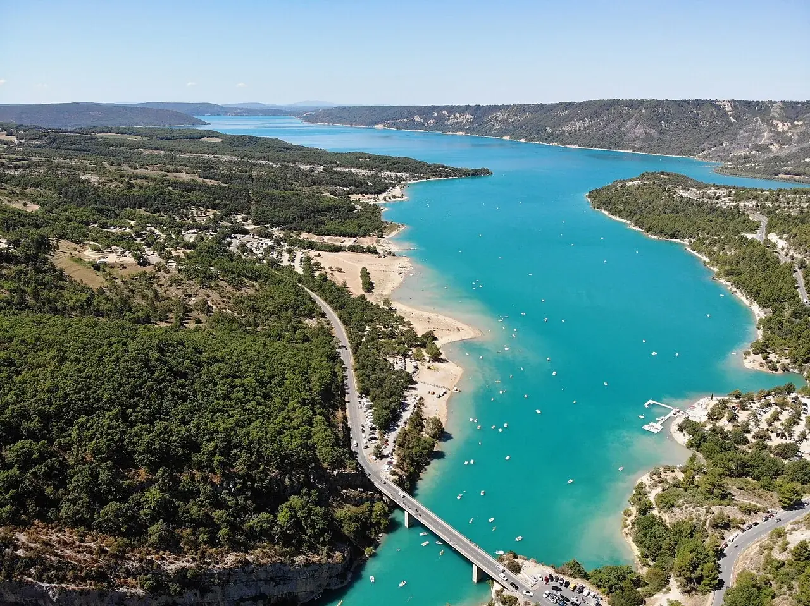

Lac de Sainte-Croix
Verdon, France · paddle, kayak, baignade

Au débouché du Verdon, un vaste lac s’étend entre le Var et les Alpes-de-Haute-Provence. Ses rives permettent de préparer des balades en kayak ou en paddle, depuis les accès autorisés.
- Lieu
- Verdon, France
- Niveau
- Variable selon les conditions
- Activités
- paddle, kayak, baignade
- Type d'eau
- lake
- Coordonnées
- 43.78, 6.17 (position approximative du secteur)
Ouvrir dans Ocean Buddy Télécharger sur l'App Store
Source : Wikipédia · géographie du lieu.